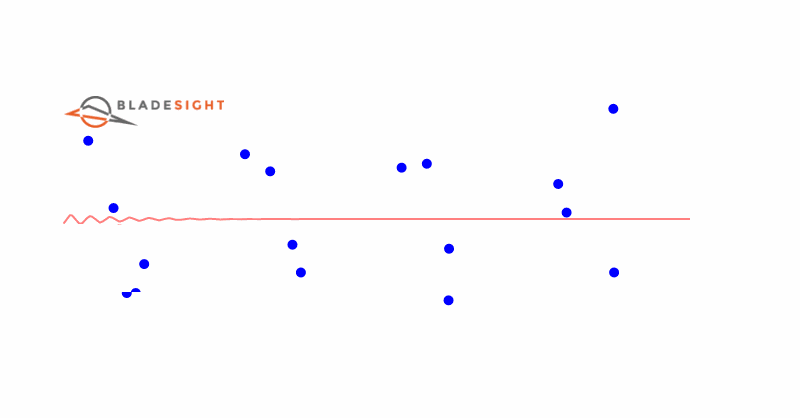

You are here
Circumferential Fourier Fit (CFF) Method
At the start of the tutorial, I promised you would learn how to infer blade frequency, amplitude, and phase from raw time stamps. In the previous chapter, we used the SDoF fit method to achieve this goal. The SDoF fit method is physics-based: it is derived from the Equations of Motion (EoM) of a harmonic oscillator.
Let's solve the problem again, but from a different angle. It's often a good idea to use two different techniques to reach the same destination. This solidifies our understanding of the problem and the solution.
The SDoF fit method, however powerful it may be, has a dark side: it is slow.
It takes ~8 seconds to solve the equations for a single resonance. This might not seem like much, but when we have many blades and resonances to analyze, it becomes impractically slow.
For real time analysis, we need a faster way to estimate the vibration parameters. That's where the Circumferential Fourier Fit (CFF) method comes in. The CFF method is a phenomenological model. A phenomenological model is only concerned with fitting the measured data well, not with being consistent with the underlying physics. We use phenomenological models all the time. The entire discipline of Machine Learning(ML) is built around them.
In its most basic form, it fits a sinusoidal function to the measured data with three coefficients: \(A\), \(B\), and \(C\). The CFF method was first named as such, to my best knowledge, in (Joung et al., 2006)1.

Outcomes
Understand that the CFF method is a phenomenological model that fits a sinusoidal function to each revolution of the blade vibration.
Construct the CFF equations.
Compare results from the CFF and SDoF fit methods.
Evaluate several candidate EOs to identify the most likely EO.
Derivation
The CFF method and the SDoF method share a common trait. Both assume the blade tip exhibits sinusoidal vibration. The CFF method, however, completely ignores the modal properties, \(\omega_n\), \(\delta_{\text{st}}\), \(\zeta\), and \(\phi_0\).
The CFF method calculates the vibration amplitude and phase directly for each shaft revolution. This results in linear equations, instead of the highly non-linear equations we had with the SDoF fit method.
The tip vibration within every shaft revolution is expressed as follows:
Symbols
| Symbol | Description | Unit | Domain |
|---|---|---|---|
| \(x(\theta_s)\) | The tip deflection at the sensor located at \(\theta_s\) | µm | \(x(\theta_s) \in \mathbb{R}\) |
| \(\theta_s\) | The angular position of sensor \(s\) | rad | \(0 \leq \theta_s \leq 2\pi\) |
| \(A\) | The amplitude of the sine term | µm | \(A \in \mathbb{R}\) |
| \(B\) | The amplitude of the cosine term | µm | \(B \in \mathbb{R}\) |
| \(C\) | The offset of the tip deflection | µm | \(C \in \mathbb{R}\) |
We can write Equation 1 for each sensor. This leads to a system of equations:
\(\theta_1\) represents the position of probe 1, \(\theta_2\) represents the position of probe 2, and so on. The variable \(n\) represents the number of probes.
This system can be written in matrix form as follows:
We finally represent the system in a more compact form:
Symbols
| Symbol | Description | Unit | Domain |
|---|---|---|---|
| \(\mathbf{x}\) | The vector of tip deflections at each sensor | mm | \(\mathbf{x} \in \mathbb{R}^n\) |
| \(\mathbf{A}\) | The matrix of the sine and cosine terms | mm | \(\mathbf{A} \in \mathbb{R}^{n \times 3}\) |
| \(\mathbf{b}\) | The vector of the vibration parameters | mm | \(\mathbf{b} \in \mathbb{R}^3\) |
We have now rephrased the problem as a linear algebra problem where we want to solve for \(\mathbf{b}\).
Once solved, we can calculate the amplitude and phase of the vibration within each revolution using:
The phase and amplitude can now be used to calculate the tip deflections:
The above equation has exactly the same form as the SDoF fit method, only with a constant amplitude and phase within each revolution.
SDoF fit equations
For comparison, here are the SDoF fit equations again:
| Symbol | Meaning | SI Unit | Domain |
|---|---|---|---|
| \(x(t)\) | Tip deflection | \(\mu m\) | \(\mathbb{R}\) |
| \(X(\omega)\) | Vibration amplitude | \(\mu m\) | \(\mathbb{R}+\) |
| \(\delta_{\text{st}}\) | Static deflection | \(\mu m\) | \(\mathbb{R}+\) |
| \(\zeta\) | Damping ratio | - | \([0,1)\) for underdamped systems |
| \(\omega_n\) | Natural frequency | \(rad/s\) or Hz | \(\mathbb{R}+\) |
| \(\theta_s\) | Sensor position | \(rad\) | \([0, 2\pi]\) |
| \(\phi(\omega)\) | Phase angle | \(rad\) | \(\mathbb{R}\) |
| \(\omega\) | Excitation frequency | \(rad/s\) or Hz | \(\mathbb{R}+\) |
| \(EO\) | Engine Order | - | \(\mathbb{Z}+\) |
What's the difference between Equation 10 and Equation 11?
The substantial difference between them is the SDoF fit method's \(X\) and \(\phi\) is a function of the excitation frequency, \(\omega\). The CFF method's \(X\) and \(\phi\) are constant scalar variables within each revolution.
Amplitude offset
The amplitude offset term, \(C\), is generally kept as a part of the CFF model parameters. This stands in contrast to the SDoF fit method, where the correction factors are subtracted from the measured tip deflections before fitting the model.
Following along
The worksheet for this chapter can be downloaded here .
You can open a Google Colab session of the worksheet here:  .
.
You need to use one of the following Python versions to run the worksheet:


Getting the dataset
To see the CFF method in action, we will use the same dataset as used in the previous chapter. This way, we can compare the results from the CFF and SDoF fit methods. The dataset contains blade tip displacements measured by four sensors for a run-up and a run-down.
Single Revolution Case
The simplest implementation of the CFF method is given below:
- Here, we specify the suffix of the tip deflection signals. We'll leave this as the default
"_filt"most of the time. We may, however, set this to""in order to fit the CFF method on the unfiltered tip deflections. -
This function fits the CFF method for a resonance. The model parameters, \(A\), \(B\), and \(C\) are solved for each revolution of data.
Args:
df_blade (pd.DataFrame): The dataframe containing the tip deflections. theta_sensor_set (List[float]): The sensor angles. EO (int): The Engine Order. signal_suffix (str, optional): The suffix of the tip deflection signals. Defaults to "_filt".Returns:
pd.DataFrame: A DataFrame containing the CFF parameters for each shaft revolution. -
We identify the names of the columns containing the tip deflections. This list is also used to determine how many probes were used for the present dataset.
- We initialize the matrix \(\mathbf{A}\), which contain each sensor's sine, cosine and constant term coefficients. We initialize it as a
PROBE_COUNT X 3matrix of ones, since the constant term is one everywhere, and the other two columns will be assigned new values. - We calculate and assign the sine and cosine coefficients for each sensor.
- Here, we calculate the pseudo inverse of
A. The pseudo inverse is a matrix that, when multiplied withA, results in the identity matrix. We only do this once, since the matrixAis constant for each revolution. - This line is the reason why the CFF method is so fast. Because our
Amatrix is constant for each revolution, we can simply multiply its pseudo-inverse with the transpose of the observed tip deflections. This results in the CFF parameters for each revolution. - From here to the end, its all cosmetic. We create a dataframe containing the CFF parameters, the amplitude, phase, and the shaft revolution number.
- We calculate the predicted tip deflections with the CFF parameters. This is for convenience so we don't need to recalculate it later to check our fits.
Here we implement the method:
- We use the
%%timeitmagic command to measure the execution time of the cell. This only works when you're in a Jupyter Notebook - We use the median of the raw AoA values for the sensor location.
The %%timeit command is something specific to Jupyter notebooks. It causes Python to run the entire cell multiple times. The mean execution time is reported after the final iteration. This is useful for benchmarking code. This call runs for a total of... 3 ms! Contrast this to the SDoF fit method, which took approximately 8 seconds. The CFF method is therefore ~2666 times faster than the SDoF fit method. This is a massive speed up ⏩!
Faster speed is awesome, but is it accurate? Here's the predicted tip deflections vs the actual tip deflections:
Wow 👏! The CFF predicted values and the measured values are almost on top of one another.
Contrast this with the SDoF method where we didn't get such a good fit. What do we conclude from this? Is the CFF method better than the SDoF fit method?
I don't think so. We have to remember the CFF method is phenomenological. It needs to fit 3 parameters to 4 measured values in each revolution. The odds are therefore stacked in its favor to fit the data well. In fact, the CFF method even fits the data well near the start of the resonance, where we mostly have noise. This should make us uneasy. If our model accurately reproduces noise, it means we are overfitting.
Now for the big question: what is our natural frequency? The simple answer is we don't have one! The CFF method is not concerned with the underlying physics, so it doesn't have a natural frequency. We can, however, assume that the shaft speed where the amplitude reaches its peak is where the natural frequency is exactly excited.
Let's compare the CFF amplitude and phase to the SDoF fit amplitude and phase for the same resonance:
From Figure 3 above, the maximum amplitude of the CFF method occurs at revolution number 568. We can use the rotor speed in this resonance, multiplied by the EO, to get the CFF natural frequency:
The CFF natural frequency at revolution 568 is 0.3 Hz higher than the SDoF natural frequency. This is a difference of 0.2%. I believe it is a small difference. The two methods seem to point to the same underlying physics. We also used the shaft speed at the previous revolution, n=567, to calculate the natural frequency. Now, the natural frequency is almost identical to the SDoF natural frequency.
The CFF method's maximum amplitude is approximately 200 μm lower than the SDoF method's maximum amplitude. This difference is large, approximately 28%. It is possible the SDoF fit method may be overestimating the amplitude. If you did the coding exercise in the previous chapter, you would have implemented an SDoF fit method that rewards the ability to capture larger amplitudes.
The phase plot suggests the two methods produce similar phase shifts where the amplitudes are largest. The CFF method produces larger phase shifts outside the resonance region.
Which one of the two is more accurate? I don't know. More effort needs to be put in to compensate for the zeroing artifacts in the CFF method. The only real way to judge which one is better is to have calibrated strain gauge data available. This falls outside the scope of the present tutorial.
Estimate the EO
The CFF method can fit the data well... as long as the correct EO is known beforehand. But what if we are not sure about the EO? How can we find out which one is the best for our data?
We can repeat what we did in the previous chapter. We can try different EO values and calculate the sum of squared errors between the predicted and the measured tip deflections. The lower the error, the better the fit. So, we search for the EO that results in the lowest error value. That is likely to be the correct one for our data.
The below code performs this calculation:
The error values are plotted in Figure 4 below.
From Figure 4 above, the EO with the lowest error value is 8. This is the correct value. You may need to zoom in a bit, since the error values for EOs 8 - 11 are close to one another.
Conclusion
In this chapter, we have shown how to apply the CFF method to a resonance event. The CFF method is a powerful tool to fit the blade tip deflection data with high accuracy. The CFF method can also be used to estimate the natural frequency and EO of vibration.
The main benefit of the CFF method is its speed. The CFF method is, in its rawest form, approximately 2666 times faster than the SDoF fit method. You should therefore be able to use it in real-time.
Outcomes
Understand that the CFF method is a phenomenological model that fits a sinusoidal function to each revolution of the blade vibration.
Construct the CFF equations.
Compare results from the CFF and SDoF fit methods.
Evaluate several candidate EOs to identify the most likely EO.
Acknowledgements
Thanks to Justin Smith and Alex Brocco for reviewing this chapter and providing feedback.

Dawie Diamond
2024-03-26
Coding exercises
1. Multiple Revolution Case
Solving the CFF parameters on a per revolution basis is great, but it may be prone to noise and outliers. In our example above, we have 3 unknown parameters and only 4 measurements. The system may be overdetermined, but we'd ideally like to have even more measurements to increase robustness to noise.
We can change the problem to allow the parameters \(A\), \(B\), and \(C\) are fit across multiple revolutions. This should increase the robustness of the fit.
Write a new function, cff_method_multiple_revolutions that receives the following arguments:
df_blade: The DataFrame containing the tip deflections.theta_sensor_set: The sensor angles.EO: The Engine Order.extra_revolutions: The number of revolutions before and after each "center" revolution to fit.signal_suffix(str, optional): The suffix of the tip deflection signals. Defaults to "_filt".
The function should fit the CFF parameters over 1 + 2*extra_revolutions consecutive revolutions. In other words, we should still receive one CFF set of parameters per revolution, but the values of \(A\), \(B\), and \(C\) should be fit over 1 + 2*extra_revolutions revolutions.
Reveal answer (Please try it yourself before revealing the solution)
Usage example:
2. Writing a function we can use
Were now going to write a single entrypoint, receiving the minimum amount of arguments, to fit the CFF method and estimate the EO. This will make it easier to use the CFF method in the future.
Write a function, called, perform_CFF_fit, receiving the following three required arguments:
- The blade tip deflection DataFrame,
df_blade. - The revolution number indicating the start of the resonance,
n_start. - The revolution number indicating the end of the resonance,
n_end.
The function should return the following values:
- The CFF parameters for each revolution.
- The EO of vibration.
You may optionally accept other parameters to make the function more flexible.
Reveal answer (Please try it yourself before revealing the solution)
Usage example:
-
Joung, K.-K., Kang, S.-C., Paeng, K.-S., Park, N.-G., Choi, H.-J., You, Y.-J., Von Flotow, A., 2006. Analysis of vibration of the turbine blades using non-intrusive stress measurement system, in: Asme Power Conference. pp. 391--397. ↩